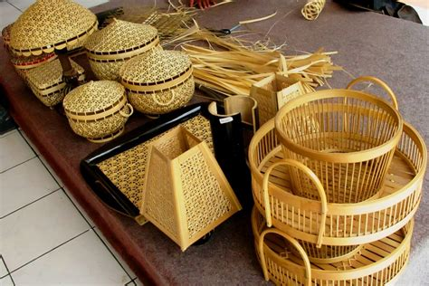
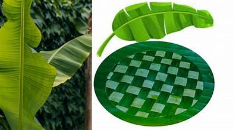
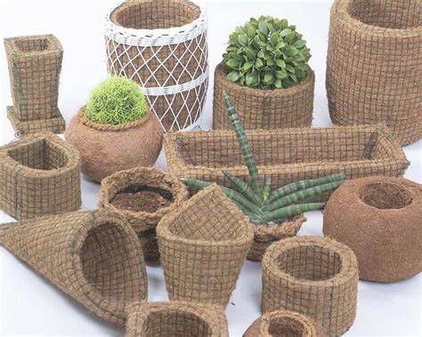
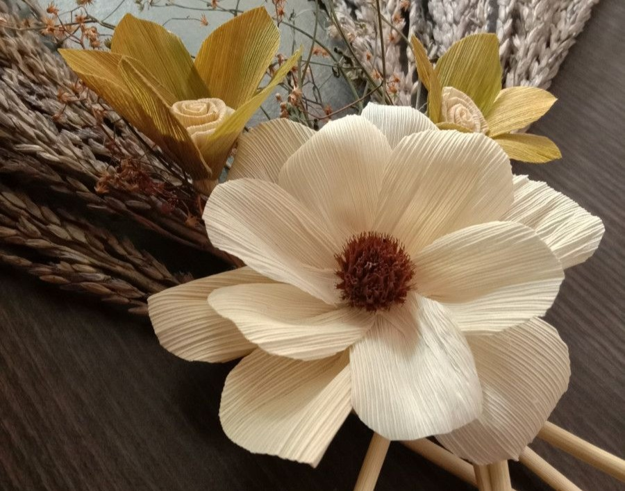

Pandan leaves are commonly used in traditional weaving. After being sun-dried, they are softened and woven into various functional items such as mats, bags, boxes, and hats. These crafts are popular in Southeast Asia.

Bamboo Crafts
Bamboo is a strong, flexible, and sustainable plant used to make furniture, kitchenware, musical instruments (like angklung), and traditional houses. It is also popular for decorative items.

Banana Leaf Crafts
Banana leaves can be dried and woven into various crafts such as bags, mats, and decorative items. The fibers from banana stems are also used to make ropes and textiles.
Rattan Crafts
Rattan is a flexible and durable plant material used to create furniture, baskets, and home decorations. It is widely used in traditional Indonesian handicrafts.

Coconut Coir Crafts
Coconut coir (the hairy part of the coconut shell) is used to make doormats, brooms, ropes, brushes, and plant pots. It is durable and water-resistant.It is also popular for decorative items.
Coconut Shell Crafts
Coconut shells are hard and easy to carve. They are crafted into bowls, ladles, cups, jewelry, and even lamps. The smooth finish adds to their aesthetic value.
Water Hyacinth Crafts
Water hyacinth is usually dried and woven into bags, baskets, shoes, trays, and home decor items. This plant is invasive in the wild but can be valuable when processed.

Corn Husk Cafts
Dried corn husks are used to make dolls, flowers, gift wrappings, and wall decorations. They are soft and easy to dye, making them ideal for craft projects.